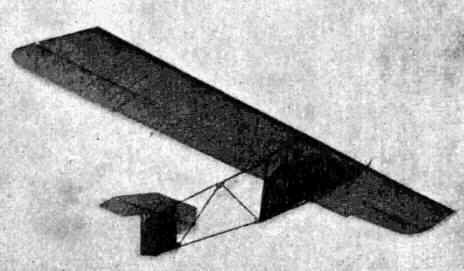
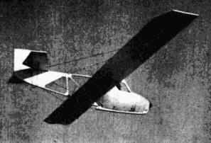
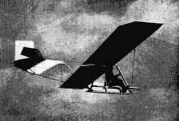
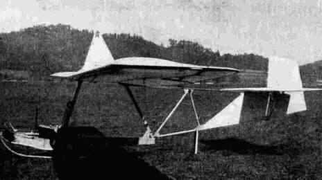
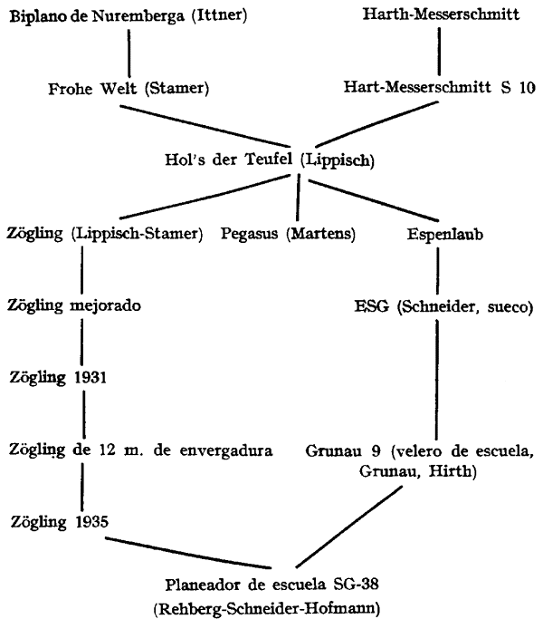

|
Inicio
Bibliografía
Noticias
Hangar
Actividades
Cursos
Comisión
Fotos
Videos
Ubicación
Contáctenos
Links
|
|
Manual del Vuelo a Vela
Wolf Hirth - 1942
Aviones de escuela
por GEORG BRÜTTiNG
Pasados los primeros años de la
historia del vuelo sin motor en los que la juventud entusiasta había llegado
sencillamente a volar en planeador y en velero, o sea sin que los jóvenes pilotos
tuviesen previos conocimientos del arte de volar, se llegó a concretar el deseo lógico
de que hubiese aviones apropiados para la enseñanza o, con otro nombre, de escuela.

Fig. 23. El planeador « Hol’s der Teufel », el «
Adán »de nuestros planeadores
actuales de escuela
Los propulsores de la generación de
jóvenes dieron rienda suelta a su afición, en parte, usando todavía el primitivo
planeador de piloto colgado; más tarde, en los biplanos ya de tripulante sentado,
entre los cuales es el más conocido el « Frohe Welt », de Stamer.
Nuevas conclusiones obtenidas
en ensayos y experiencias con el monoplano « Harth-Messerschmitt » (especialmente con
el S 10) hicieron fijar la atención en mejorar el material de escuela; finalmente, apareció el planeador monoplano atirantado
con fuselaje de viga. Los primeros representantes de este tipo de construcción fueron «
Hol's der Teufel » (figura 23), de Lippisch; el avión de escuela, de Espenlaub, que dio
origen a las unidades del tipo « Grunau » y el « Pegasus », proyectado por Martens. Se
puede afirmar que con las mejoras que se le introdujeron después, el «Hol's der Teufel
» se mantiene, hasta los tiempos actuales, como avión utilizable para enseñanza y puede
ser designado, en todo el mundo, con el nombre de « Padre de los planeadores de escuela ». También surgió, en el año 1924,
el sencillo aparato de escuela de Espenlaub, siendo el primer término de una serie de
construcciones que vinieron a parar finalmente en el « Grunau 9 » (fig. 24). 
Fig. 24. Izquierda: el « Grunau 9 » con asiento
de piloto carenado, conocido con el nombre de «Ei»
(Huevo). - Derecha: el «Grunau 9», antes designado por ESG
Del primer « Zögling », de Lippisch y Stamer, que fue construido
en abril de 1926, salieron todos los planeadores que se construyeron en el mundo entero,
algunas veces, con el fuselaje-viga de tubos de acero y otras, con patín de resortes, con
alas mayores, etc.; pero siempre era el mismo con diferente nombre.
Quizá podrían muy bien reunirse cincuenta variantes, o
más, de ese tipo entre los construidos en los Estados Unidos, Inglaterra, África del
Sur, Francia, Japón y otros países.
Corría parejas con el « Zögling » el « ESG », más
tarde «Grunau 9», que es actualmente muy usado en Alemania y que tuvo también favorable
acogida en otros países.

Fig. 25.
« SG 38 », el planeador de escuela más usado en la actualidad
En
Alemania es reconocido hoy como tipo único el planeador de escuela « SG 38 » (fig. 25).
La evolución histórica del planeador podría
representarse en el siguiente cuadro, que tal vez estaría bien designado con el nombre de
árbol genealógico del aparato de escuela:

Aparatos de entrenamiento
Pronto se
hizo patente la necesidad de un segundo género de aparatos para los que ya eran pilotos
de planeador, es decir, para aquellos que estando en posesión de los títulos A y B
podía decirse tenían acabada la enseñanza en el vuelo planeado y debían ya iniciarse
en los secretos del vuelo a vela, debiendo por lo tanto hacer el oportuno entrenamiento.
Como primer tipo de estos aparatos puede citarse el velero
«Edith», del grupo Akaflieg, de Darmstadt (1922). Después de una serie de aparatos que
correspondían a términos de una evolución, se vino, por fin, en 1926 al «Prüfling»,
de Lippisch, transformado luego en el tipo intermedio «Handwing » (nombre familiar,
entre los aviadores de Lippisch), del que salió en 1929 el «Falke», un tipo que se ha
volado mucho hasta estos últimos años. Era un monoplano de ala alta, arriostrado con
tornapuntas, el cual no tenía las alas rectas, sino con torsión y en flecha, con lo cual
se protegía al piloto y se garantizaba la estabilidad. Las alas en flecha permitían que
el asiento del piloto fuese debajo de ellas y no delante, como ocurría en otros tipos,
con lo que el piloto resultaba con muy buena protección en los aterrizajes violentos o
con avería y de hecho no podía producirse ningún accidente serio volando con este
velero, por todo lo cual se comprende que este tipo fuese tan preferido y haya durado
tanto tiempo en boga.
La enorme extensión que tomó el deporte del vuelo a vela
desde 1930-31 y la elevación de las distintas marcas de vuelo, así como la mejora de los
resultados medios obtenidos por los pilotos, como igualmente la circunstancia de que
muchos pilotos sencillos de velero pasaban a serlo de marca, pusieron de manifiesto la
necesidad de un velero universal que fuese barato y que sirviese para ejercitarse los
pilotos en esa nueva vía, así como que permitiese los avances necesarios en el pilotaje,
ya que por otra parte los tipos de velero existentes hasta entonces no podían satisfacer
cumplidamente todas las exigencias. Así, los talleres Schneider, de Grunau, dedicaron sus
esfuerzos a llenar esta laguna, la cual sólo podía ser colmada por un velero de pequeña
envergadura, que, por una parte, tuviese la ventaja de fáciles transportes y
entretenimiento y que, además, dentro de que el montaje fuese rápido, tampoco exigiese
muchos medios auxiliares para realizarle, y, por otra parte, fuese el velero exigido por
el vuelo a vela con ascendencia térmica que cada vez se utilizaba más y, sobre todo, que
permitiese la técnica del virar ceñido, es decir, que fuese muy manejable sin dejar de
tener suficiente velocidad horizontal de vuelo.
Hay ciertamente otros tipos de veleros de entrenamiento;
pero, sin embargo, creemos que será suficiente la descripción del que hoy es el más
usado.
Cuando Wolf Hirth llegó a Grunau en 1931 oyó los deseos
de Schneider v haciendo uso de las experiencias que se tenían con el velero «
Wiesenbaude II », emprendieron ambos con todo secreto una serie de ensayos comparativos
de ese tipo con el que por ellos fue proyectado, el « ESG 31», al que dieron el nombre
de « Stanavo». Las investigaciones y experiencias realizadas siguieron de base y
marcaron las directrices para la reducción que se propusieron y que dio lugar al llamado
« Grunau Baby », aparecido al final de 1932, con una envergadura de 12,8 m. Este aparato
se acreditó y se consideró capaz de perfeccionamiento, y así en la primavera de 1933 el
«Baby» fue transformado con las experiencias recogidas y dio lugar al «Grunau Baby
II», que especialmente tenía mejores propiedades de vuelo y, como cada vez era mas usado
en el vuelo remolcado y subsiguiente vuelo térmico, se le dio aún más importancia a la
posibilidad de virar, como igualmente se elevó la velocidad de remolque a 90 km/h.
Este velero tuvo desde entonces una insospechada carrera
de triunfos por todo el mundo; permitió a muchos pilotos obtener el distintivo « C » de
plata, y hasta que se prohibió la acrobacia con los aparatos normales fue el velero
preferido para ejecutar los vuelos acrobáticos sencillos. Fue todavía mejorado en el
transcurso de los últimos años y actualmente es construido en serie, en número bastante
crecido, con el nombre de « Baby lIa ». Sin embargo, siempre son posibles ciertos
perfeccionamientos que permitan que el « Baby», conocido mundialmente, sea, a secas, el
tipo clásico de velero de entrenamiento o de escuela.
Este aparato está hoy en uso casi exclusivamente con el
tipo de «Baby lIa», cuya construcción está muy bien hecha en conjunto y es sencilla,
con un tablero de instrumentos prácticamente dispuesto para los vuelos de concurso; son
muy cómodas, especialmente en el nuevo tipo, las operaciones de montar y desmontar, que
pueden ser llevadas a cabo, cada una, por tres hombres, en diez minutos. La envergadura se
ha aumentado hasta los 13,5 m.; el. peso equipado es de 137 kg., y el coeficiente de
planeo, de valor 1: 17, es bastante bueno para un velero de entrenamiento.
Derivado del « Grunau Baby », apareció, en 1935, para
el vuelo acrobático elemental el « Göppingen I » (Wolf), tipo que conducido por
pilotos seguros se ha acreditado mucho. En mayo de 1939 ganó, en él, un holandés el
segundo premio, detrás de Doret, que voló un «Habicht», en el « Concurso mundial de
pilotos de vuelo de acrobacia en velero », celebrado en Paris sin participación alemana.
El «Rhönbussard», que se ha empleado a menudo como
velero de transición entre los de entrenamiento y los de concurso, se considera más bien
como « Velero de concurso ».
Finalmente, un velero de entrenamiento de tipo especial
empleado en muchos países, es el « H 17 », de los hermanos Hütter, el cual, aunque no
puede compararse en sus características con los aparatos de igual clase, tiene las
ventajas prácticas de que vira ceñido y de que, provisto de una rueda, se transporta muy
fácilmente a causa de su pequeño peso, que es solamente de 90 kg.
|